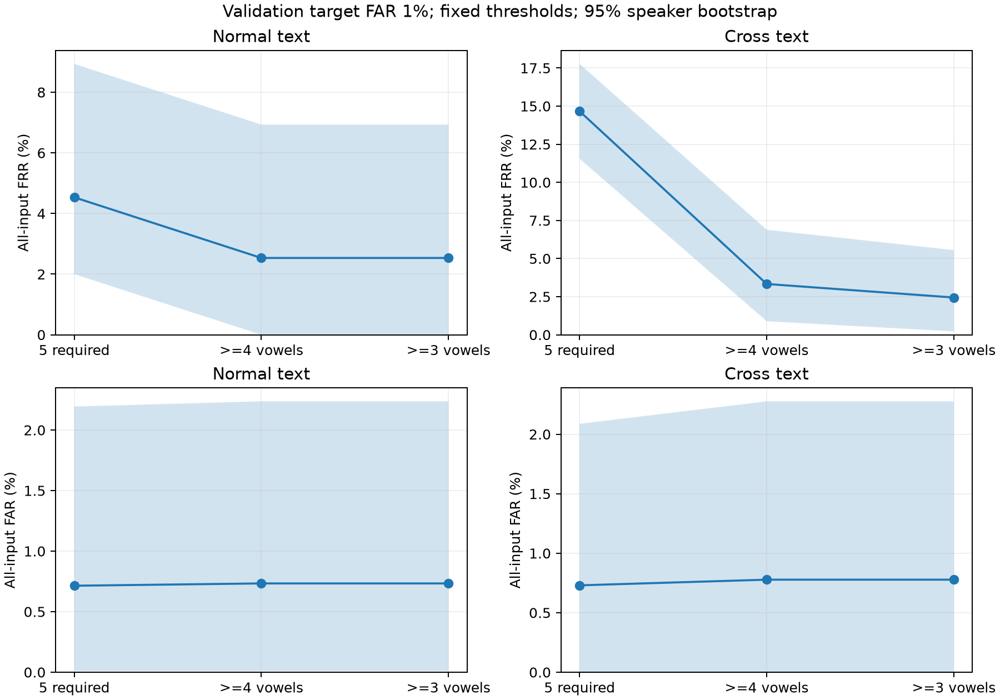

Phase 8: 照合時の母音不足に対応する実測比較
登録は各母音10区間・固定境界内母音encoderを使用。同じ発話全区間で、5母音必須・4母音以上・3母音以上を比較した。取得できた母音のsegment cosineを母音内で平均し、存在する母音のscoreだけを等重み平均する。各方式のvalidation通常文で校正した閾値をtestへ固定適用した。
観測済みJVS testによる探索的な追加検証。再学習・品質重み・Transformer・本番APIの切り替えは行っていない。3母音の通常文validationデータはなく、3母音以上と4母音以上の閾値は同じ。未観測holdout、別日・別端末の性能は未確認。CIは固定モデル・固定閾値の10,000回話者bootstrapで、校正の不確かさと多重比較の補正は含まない。
通常文（validation目標FAR 1%）
FARとFRRの条件付き分母はscoreが出たtrial。全入力FRRにはno_scoreも拒否として含める。
別テキスト（validation目標FAR 1%）
FARとFRRの条件付き分母はscoreが出たtrial。全入力FRRにはno_scoreも拒否として含める。
厳しい動作点（validation目標FAR 0.1%）
目標値はvalidationの校正条件であり、testの実測FARが同じになるとは限らない。
本人救済と他人受入の内訳（主条件、対5母音必須）
5母音揃う発話のscoreは全方式で同じ。既存発話の判定差は方式ごとの固定閾値の違いによる。
方式差と共有話者bootstrap（主条件、対5母音必須）
負の値は誤り率の低下。同じ全入力集合で比較し、条件付き指標は方式によってscoreありの分母が異なる。
全条件と図

全条件CSV / paired差CSV / 判定変化CSV / 欠損パターンCSV
検証
全embeddingは3回反復して完全一致。5母音必須の全36,000 trial、validation閾値、test指標・CIは既存結果と一致。5母音揃う発話の各母音scoreと統合scoreは全方式で一致。元音声・重み・特徴統計・登録profileは変更していない。工程時間は反復推論や検査を含み、1認証のlatencyではない。